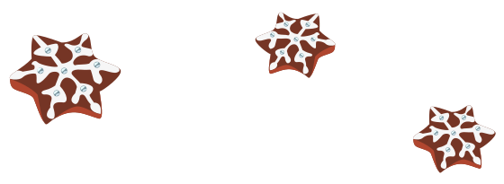
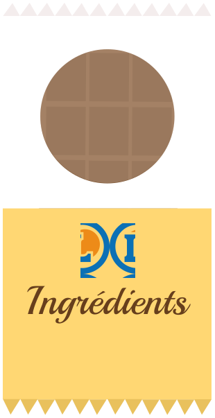

Les recettes de Noel


Sablés de Noël
Ingrédients
- 3 verres de farine
- 1 verre de sucre en poudre
- 2 cuillères à soupe de canelle en poudre
- 1 oeuf
- 1/2 verre de poudre d'amende
- Des emporte-pièces
Préparation
- Pour faire la pâte sablée : Demande à ta maman de couper le beurre en morceaux et de le faire ramollir dans une casserole. Verse tous les ingrédients dans un grand bol sans oublier de casser l’œuf, ajoute le beurre ramolli puis mélange bien.
- Demande à ta maman de faire préchauffer le four à 240°C.
- Farine le plan de travail et étale la pâte avec un rouleau à pâtisserie.
- Découpe les gâteaux en forme de sapin, d’étoile, …avec les emporte-pièces..
- Demande à ta maman de mettre les gâteaux sur la plaque du four et de les faire cuire 15 à 20 minutes.
- Une fois cuits, mange-les avec une boule de glace vanille, c’est encore meilleur !
Tartines de Noël
- Beurre généreusement les tranches de brioche. Il te faut une tranche pour chaque membre de ta famille !
- Demande à ta maman de faire préchauffer le four à 180°C.
- Saupoudre de sucre en poudre chaque tartine à l’aide d’une cuiller jusqu’à recouvrir entièrement le beurre.
- Avec son aide, range les tartines sur la plaque du four près du grill et laisse dorer le caramel.
- Demande à ta maman de retirer les tartines du four, mais attention à ne pas te brûler !
- Prépare un pochoir en forme de sapin : dessine un sapin sur une feuille et découpe l’intérieur de la forme
- Amuse-toi à décorer chaque tartine en saupoudrant de chocolat en poudre par-dessus le pochoir. Ça dessine ton sapin sur la tartine !
- Tu peux créer toutes les formes de pochoir que tu souhaites : étoile, lune, botte… ça va étonner tout le monde !
- Beurre généreusement les tranches de brioche. Il te faut une tranche pour chaque membre de ta famille !
- Demande à ta maman de faire préchauffer le four à 180°C.
- Saupoudre largement de sucre en poudre chaque tartine à l’aide d’une cuiller jusqu’à recouvrir entièrement le beurre.
Ingrédients :
- 6 tranches de grosse brioche
- Du beurre
- 6 cuillers à soupe de chocolat en poudre
- 6 cuillers à soupe de sucre en poudre
- Une feuille de papier et des ciseaux
Flocons de neige
Ingrédients
- 3 verres de farine
- 1 verre de sucre en poudre
- 2 cuillers à soupe de cannelle en poudre
- 1 œuf
- 1/2 verre de poudre d’amandes
- Des emporte-pièces
- Mets le beurre ramolli dans une casserole.
- Casse le chocolat blanc dans la casserole, puis ajoute les 2 cuillers à soupe de lait.
- Demande à ta maman de faire fondre le tout : il faut bien mélanger.
- Une fois que c’est fait, hors du feu, ajoute les Corn Flakes et mélange le tout.
- Sur une plaque de cuisson, fais des petits tas avec une cuiller à café.
- Mats la plaque au réfrigérateur et laisse tes flocons durcir.
Truffes en chocolat

- 1 tablette de chocolat noir pour dessert
- 1 jaune d’œuf
- Du sucre en poudre
- Du cacao non sucré
Préparation
- Demande à ta maman de faire fondre la tablette de chocolat au bain-marie ou au micro-ondes.
- Lorsque tout est fondu, ajoute hors du feu le jaune d’œuf et mélange bien.
- Laisse refroidir, puis avec l’aide de ta maman, mets au frais quelques heures.
- Lorsque c’est froid, forme des petites boules avec tes mains, et roule-les dans le cacao et le sucre en poudre.